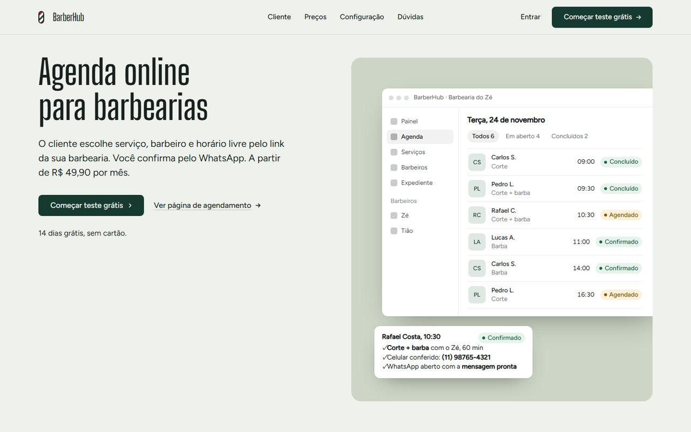
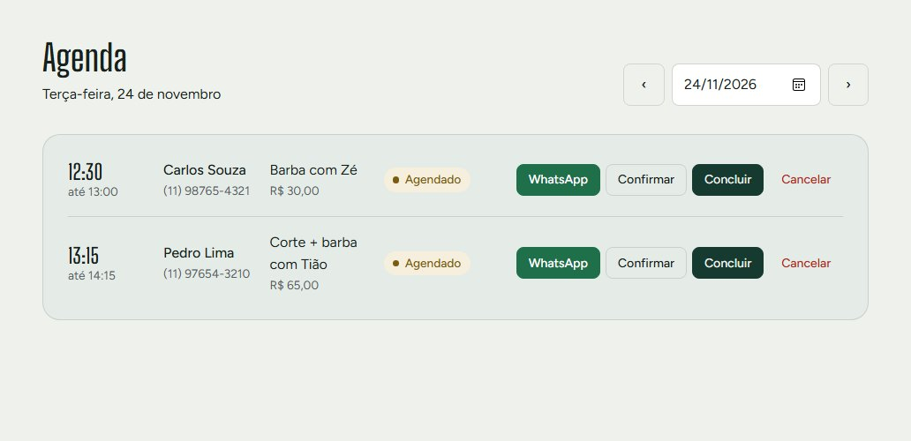
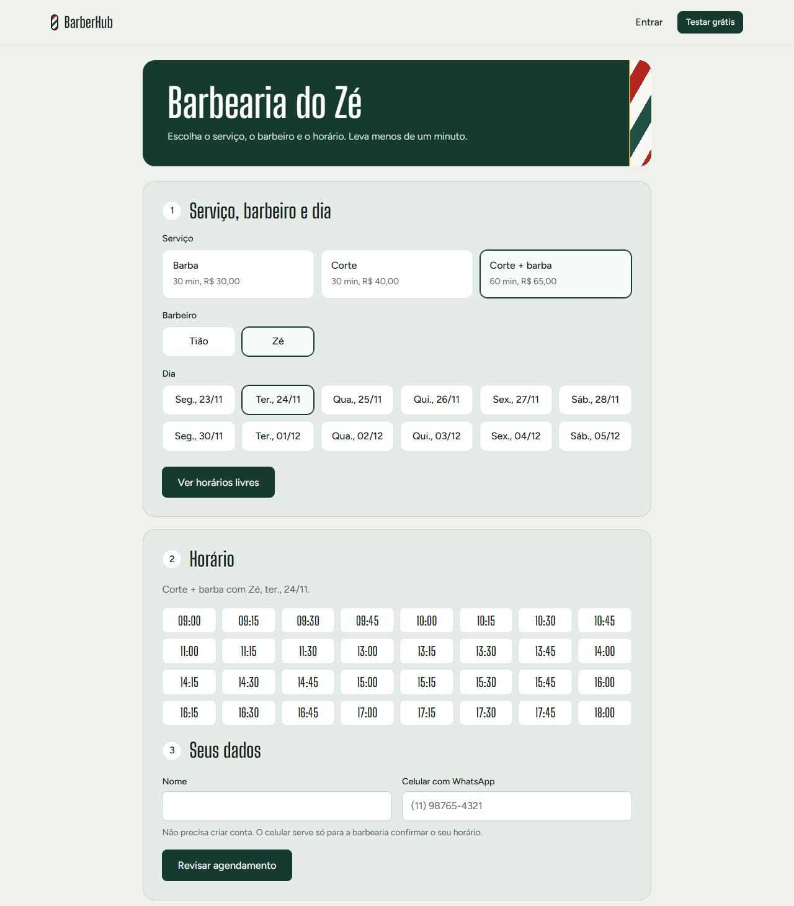
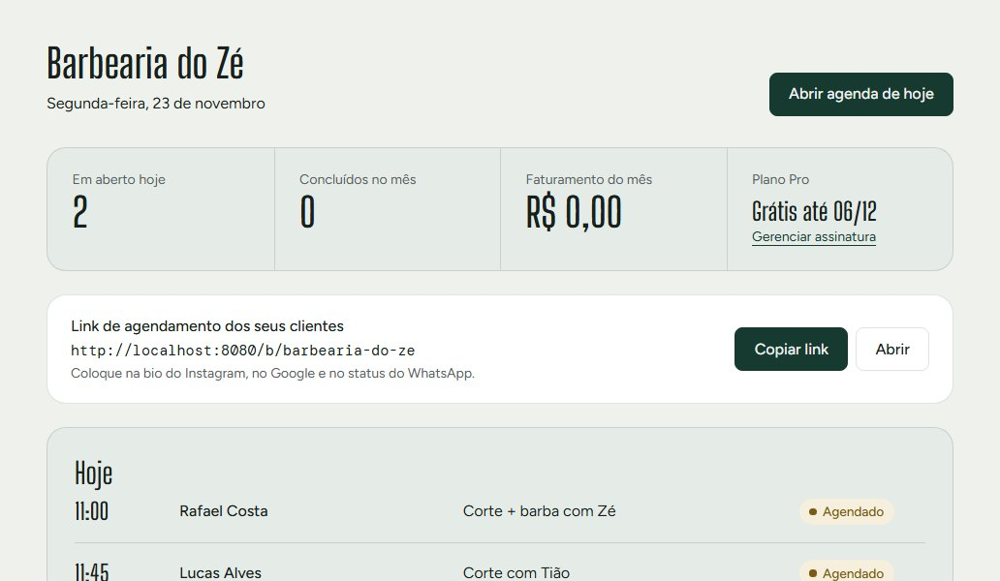

Trabalho prático: Desenvolvimento e apresentação de um SaaS
FATEC · Prof. David Silva · Novembro de 2026
Integrante
Repositório: https://github.com/joao-hideki/barberhub
A maioria das barbearias pequenas ainda controla os horários em um caderno ou por mensagens de WhatsApp. Isso causa horários marcados em duplicidade, clientes que esquecem o horário, tempo perdido respondendo "tem horário amanhã?" no meio do atendimento e nenhuma visão de quanto a barbearia faturou.
O BarberHub é oferecido pela internet como assinatura mensal. Cada barbearia cria a própria conta
e recebe um link público de agendamento (/b/nome-da-barbearia) para divulgar no Instagram,
no Google e no WhatsApp. Todas as barbearias usam a mesma aplicação e o mesmo banco, mas cada uma só acessa os próprios dados (multi-tenant).
| Funcionalidade | Descrição |
|---|---|
| Cadastro e login | O dono cria a barbearia, escolhe o plano e ganha 14 dias grátis. A senha é guardada com hash. |
| Catálogo | Serviços com preço e duração (em blocos de 15 min), barbeiros e expediente por dia da semana. |
| Agendamento público | O cliente escolhe serviço, barbeiro, dia e um horário livre, informa nome e celular e confere os dados antes de confirmar. |
| Agenda do dia | Lista de atendimentos com botão de WhatsApp (mensagem pronta) e ações de confirmar, concluir e cancelar. |
| Painel | Atendimentos do dia, concluídos no mês, faturamento do mês e situação da assinatura. |
| Assinatura | Escolha do plano e pagamento com cartão por um gateway simulado, com histórico de pagamentos. |




| Plano | Preço | Barbeiros | Inclui |
|---|---|---|---|
| Básico | R$ 49,90/mês | 1 | Agendamentos ilimitados, página pública, painel, 14 dias grátis sem cartão |
| Pro | R$ 99,90/mês | até 5 |
A cobrança é recorrente no cartão. O sistema bloqueia novos agendamentos quando a assinatura vence e impede trocar para um plano com menos vagas do que os barbeiros ativos. Futuramente, a receita pode crescer com lembretes automáticos por WhatsApp como serviço adicional.
O sistema é uma aplicação web monolítica em camadas, com renderização no servidor. O navegador recebe HTML pronto, sem uma API separada, o que diminui as peças a manter e é adequado a um MVP.
docker compose up.
ASP.NET Core Razor Pages com Bootstrap 5 nas telas do app. A página inicial usa o kit visual da skill
taste-skill (licença MIT), e as demais telas seguem o mesmo padrão de cores e tipografia. Cada tela tem um arquivo .cshtml (HTML com C#)
e um PageModel que trata o GET e o POST do formulário. As telas do dono ficam em /Painel,
protegidas por login (cookie). A página do cliente, /b/{slug}, é pública. Formulários usam token antifalsificação (CSRF).
As regras ficam em serviços de domínio (CadastroService, CatalogoService,
AgendamentoService, AssinaturaService) que recebem as dependências por
injeção de dependência: banco, relógio (TimeProvider) e gateway. As telas apenas chamam esses serviços.
Assim, as regras são testadas sem a interface. Cada operação devolve um Resultado (sucesso, ou erro com mensagem para o usuário).
PostgreSQL 17 acessado pelo Entity Framework Core 10 (ORM). O esquema é versionado por
migrations e aplicado automaticamente quando o app sobe. Toda tabela de negócio tem BarbeariaId, e as
consultas sempre filtram por ele (isolamento multi-tenant). Índices únicos garantem e-mail e endereço público sem repetição.
O preço do serviço é copiado para o agendamento, preservando o histórico.
| Tabela | Conteúdo |
|---|---|
| Barbearias | tenant do SaaS: nome, slug, e-mail, hash da senha, plano, validade da assinatura |
| Servicos / Barbeiros / Expedientes | catálogo e horário de funcionamento de cada barbearia |
| Clientes | nome e celular normalizado (único por barbearia) |
| Agendamentos | barbeiro, serviço, cliente, início, fim, preço da época e status |
| Pagamentos | histórico das cobranças da assinatura (aprovadas e recusadas) |
| Tecnologia | Por que foi escolhida |
|---|---|
| C# / .NET 10 (LTS) | Linguagem que o autor domina; versão com suporte de longo prazo. |
| Razor Pages | Renderização no servidor e acesso direto aos serviços, sem API separada. Menos código para um MVP. |
| PostgreSQL + EF Core | Banco relacional robusto e gratuito; o ORM e as migrations evitam SQL manual e versionam o esquema. |
| Docker Compose | Qualquer pessoa sobe banco e aplicação com um comando, sem instalar PostgreSQL nem .NET. |
| xUnit + Testcontainers | Testes com um PostgreSQL real e descartável, iguais ao ambiente de produção. |
| Técnica | Como aparece no projeto |
|---|---|
| TDD (metodologia) | Cada regra nasceu de um teste que falhava (red), seguido do código mínimo para passar (green). Foram 23 ciclos com commit separado para cada etapa, verificáveis com git log. Ao todo são 70 testes. |
| Testes de integração com banco real | Testcontainers sobe um PostgreSQL no Docker, e cada teste usa um banco novo. Só o gateway externo é substituído por um dublê. |
| Relógio controlado | TimeProvider injetado: os testes fixam "segunda, 23/11/2026, 09:00" e avançam o tempo para testar o fim do período grátis. |
| Arquitetura em camadas | Interface (Pages), lógica (Services/Domain) e dados (Data) separadas. |
| Injeção de dependência e interfaces | IGatewayPagamento: para trocar o simulador por um gateway real, basta mudar uma linha do Program.cs. |
| Pagamento simulado (decisão de projeto) | Um gateway real exige chaves de API, proibidas no repositório pelo enunciado, e um webhook com endereço público, inviável numa demonstração local. Por isso a cobrança passa por um simulador (cartão final 0000 é recusado), e a integração real fica como próximo passo. |
| Multi-tenant | BarbeariaId do usuário logado vem do cookie, e todos os serviços filtram por ele. Há testes garantindo que uma barbearia não altera dados de outra. |
| Segurança | Senha com hash PBKDF2 e salt, cookie de autenticação, token CSRF e nenhuma credencial no repositório (.env ignorado pelo git). |
| ORM e migrations | EF Core gera e aplica o esquema do banco automaticamente. |
| Conteinerização | Dockerfile multi-stage e docker-compose com healthcheck do banco. |
Esse fluxo também foi automatizado como teste ponta a ponta via HTTP durante o desenvolvimento.
| Etapa | Contribuição |
|---|---|
| Entendimento e planejamento | Organizou os requisitos do enunciado em entregáveis, propôs o tema e o escopo do MVP e discutiu decisões com o autor (stack, cadastro do cliente, gateway). |
| Programação (TDD) | Escreveu os testes de cada regra antes do código e depois a implementação mínima, com commits red/green. |
| Testes | Configurou Testcontainers e o relógio falso e criou um teste ponta a ponta via HTTP do fluxo completo. |
| Solução de problemas | Diagnosticou incompatibilidades de versão e erros de layout (conferidos por screenshots). |
| Interface | Redesenhou a página inicial com a skill de design e levou o mesmo padrão às demais telas, conferindo cada uma por screenshots no desktop e no celular. |
| Documentação | Rascunho do README, deste relatório e do roteiro da apresentação, revisados pelo autor. |
NU1202 e fixou as versões compatíveis com o .NET 10. Durante a revisão visual,
ela também encontrou um card esticado na página pública e corrigiu a regra de CSS responsável.
Todo o código gerado com auxílio de IA foi lido e revisado pelo autor, que é responsável por ele e sabe explicá-lo.
EXCLUDE USING gist). Hoje a checagem de conflito é feita pelo código antes de gravar.